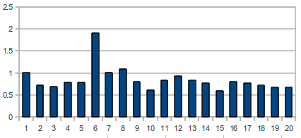

双密码
双密码简介¶
双密码结合了波利比奥斯方阵密码和换位密码，并使用分级来实现扩散。（注意：维基百科中的bifid cipher存在错误）
本文将period翻译为周期，笔者认为这可能不是很恰当，请在下方留言，我们将及时修改
双密码示例¶
举例
使用如下的密钥矩阵及周期5加密defend the east wall of the castle
1 2 3 4 5 - - - - - 1| p h q g m 2| e a y l n 3| o f d x k 4| r c v s z 5| w b u t i
对明文进行加密时，每个字母都被替换为左侧和顶部的数字。例如明文d加密后的结果为33
明文: d e f e n d t h e e a s t w a l l o f t h e c a s t l e 密文: CCBACBBABECC EDABBA BABBDDED EABBBDBD CACB EDABBA DBBBDDEDBDBA
加密过程显而易见，每个明文字母均被替换为当前行首和列首的两个密文字符，如d->CC，以此类推：
明文: defend the east wall of the castle
步骤 1：行 323223 512 2245 5222 33 512 424522
列 312153 421 1244 1244 12 421 224441
步骤 2： 32322 35122 24552 22335 12424 522
31215 34211 24412 44124 21224 441
步骤 3: 3232231215 3512234211 2455224412 2233544124 1242421224 522441
步骤 4: f f y h m k h y c p l i a s h a d t r l h c c h l b l r
最终加密结果为：ffyhmkhycpliashadtrlhcchlblr
双密码的程序实现¶
>>>from pycipher import Bifid >>>Bifid('phqgmeaylnofdxkrcvszwbuti',5).encipher('defend the east wall of the castle') 'FFYHMKHYCPLIASHADTRLHCCHLBLR' >>>Bifid('phqgmeaylnofdxkrcvszwbuti',5).decipher('FFYHMKHYCPLIASHADTRLHCCHLBLR') 'DEFENDTHEEASTWALLOFTHECASTLE'
双密码的密码分析¶
确定周期¶
首先要确定加密时的周期。事实证明，当周期是偶数时更利于破解，当周期是奇数时需要更长的密文。假设我们的密文如下：
ABCDEFGHIJK
周期为0的二元组为：AB，BC，CD，DE，EF，FG 等。
周期为1的二元组为：AC，BD，CE，DF，EG，FH 等。
周期为2的二元组为：AD，BE，CF，DG，EH，FI 等。
....依次，尝试到最大周期为20。
对二元组进行统计得到：AB：3，SE：1，ER：1，DF：2，CD：1 ，此时方差为0.64。
我们对周期为12的密文计算二元组方差，得到：

可以看到在周期为6处有一个明显的尖峰，正好是12的一半。
但如果我们分析的密文周期为11时，会得到如下的结果：

可以看到峰值位于5和6之间，如果密文较短可能没有办法判断周期。如果遇到这种情况，你可以先假设一个周期，然后使用接下来的步骤破解密文，如果得到的文本不可读就再更换一个周期。
确定密钥方阵¶
在计算出周期后，确定密钥方阵时使用的还是模拟退火算法。大概思路就是，随机生成一个密钥矩阵，然后对密文进行解密并使用四元组评分，如果评分高于最高分数则保留当前密钥并对密钥做出随机调整，用新解密对密文解密并使用四元组评分，如果评分低于最高分数则返回上一步（但是在某些概率下会接受较差的结果）。具体程序参看如下：
程序实现¶
因为python运行速度较慢，此处我们采用C语言：
#include <stdio.h> #include <stdlib.h> #include <string.h> #include <math.h> #include <time.h> #include "scoreText.h" #define TEMP 20 #define STEP 0.1 #define COUNT 10000 char *bifidDecipher(char *key, int period, char *in,char *out, int len); float bifidCrack(char *text,int len, char* maxKey, int period); static char *shuffleKey(char *in); int main(int argc, char *argv[]) { // THINGS TO ENSURE: CIPHER AND KEY MUST BE UPPERCASE, CONSISTING ONLY OF LETTERS A-Z, AND NO OTHERS. YOU CAN SPELL OUT NUMBERS IF YOU NEED TO. // NEITHER THE CIPHER OR THE KEY SHOULD HAVE THE LETTER 'J' IN IT. IT WILL CRASH IF YOU DO NOT DO THESE THINGS. THIS IS A PROOF OF CONCEPT ONLY. char cipher[] = "KWTAZQLAWWZCPONIVBTTBVQUZUGRNHAYIYGIAAYURCUQLDFTYVHTNQEENUPAIFCUNQTNGITEFUSHFDWHRIFSVTBISYDHHASQSROMUEVPQHHCCRBYTQBHWYRRHTEPEKHOBFSZUQBTSYRSQUDCSAOVUUGXOAUYWHPGAYHDNKEZPFKKWRIEHDWPEIOTBKESYETPBPOGTHQSPUMDOVUEQAUPCPFCQHRPHSOPQRSSLPEVWNIQDIOTSQESDHURIEREN"; int period = 7; int len = strlen(cipher); char *out = malloc(sizeof(char)*(len+1)); srand((unsigned)time(NULL)); // randomise the seed, so we get different results each time we run this program printf("Running bifidcrack, this could take a few minutes...\n"); char key[] = "ABCDEFGHIKLMNOPQRSTUVWXYZ"; int i=0; double score,maxscore=-99e99; // run until user kills it while(1){ i++; score = bifidCrack(cipher,len,key, period); if(score > maxscore){ maxscore = score; printf("best score so far: %f, on iteration %d\n",score,i); printf(" Key: '%s'\n",key); bifidDecipher(key, period, cipher,out, len); printf(" plaintext: '%s'\n",out); } } free(out); return 0; } void exchange2letters(char *key){ int i = rand()%25; int j = rand()%25; char temp = key[i]; key[i]= key[j]; key[j] = temp; } // this is the bit that implements the simulated annealing algorithm float bifidCrack(char *text,int len, char* bestKey, int period){ int i,j,count; float T; char temp, *deciphered = malloc(sizeof(char) * (len+1)); char testKey[26]; char maxKey[26]; double prob,dF,maxscore,score; double bestscore; strcpy(maxKey,bestKey); bifidDecipher(maxKey, period,text,deciphered,len); maxscore = scoreTextQgram(deciphered,len); bestscore = maxscore; for(T = TEMP; T >= 0; T-=STEP){ for(count = 0; count < COUNT; count++){ strcpy(testKey,maxKey); exchange2letters(testKey); bifidDecipher(testKey, period,text,deciphered,len); score = scoreTextQgram(deciphered,len); dF = score - maxscore; if (dF >= 0){ maxscore = score; strcpy(maxKey,testKey); }else if(T > 0){ prob = exp(dF/T); if(prob > 1.0*rand()/RAND_MAX){ maxscore = score; strcpy(maxKey,testKey); } } // keep track of best score we have seen so far if(maxscore > bestscore){ bestscore = maxscore; strcpy(bestKey,maxKey); } } } free(deciphered); return bestscore; } char *bifidDecipher(char *key, int period, char *text, char *result, int len){ int i, j; char a,b; /* the digram we are looking at */ int a_ind,b_ind; int a_row,b_row; int a_col,b_col; for (i = 0; i < len; i += period){ if (i + period > len){ period = len - i; } for (j = 0; j < period; j ++){ a = text[i+(j/2)]; b = text[i+((period+j)/2)]; /*if (index(key,a) == NULL || index(key,b) == NULL) break;*/ a_ind = (int)(index(key,a) - key); b_ind = (int)(index(key,b) - key); a_row = a_ind / 5; b_row = b_ind / 5; a_col = a_ind % 5; b_col = b_ind % 5; if (j % 2 == 0){ result[i+j] = key[5*a_row + b_col]; } else { result[i+j] = key[5*a_col + b_row]; } } } result[i] = '\0'; return result; } // do fisher yeates shuffle static char *shuffleKey(char *in){ int i,j; char temp; for (i = 24; i >= 1; i--){ j = rand() % (i+1); temp = in[j]; in[j] = in[i]; in[i] = temp; } return in; }
其他相关头文件下载：
编译命令:gcc -O3 -lm bifidcrack.c scoreText.c -o bifid